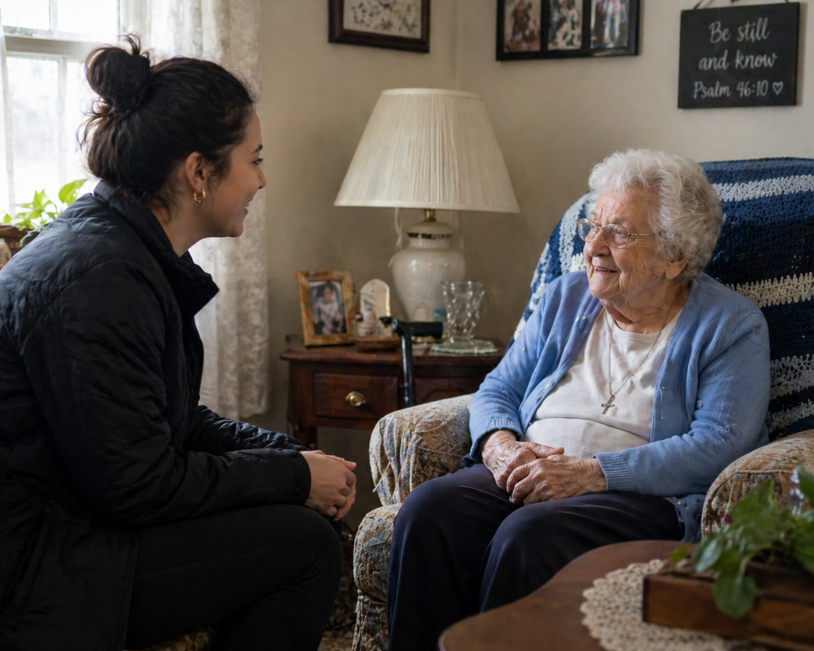

St. George • Washington • Southern Utah
For the people you worry about, but can’t always get to.
Red Desert Check-In provides in-person visits for loved ones who are still mostly independent, but may need someone checking in, noticing changes, and sending you a clear update after.
📍 St. George, Washington, and surrounding areas

The gap is real.
Not everyone needs a nurse, caregiver, assisted living, or a house cleaner. But that does not mean everything is fine.
Small changes can be easy to miss until they become big problems.
More clutter
Less food
in the fridge
Missed
hygiene
Loneliness
or isolation
Confusion
Fall risks
For aging parents
Regular check-ins for loved ones who live alone or independently.
For families out of town
A local set of eyes when you can’t be there in person.
For peace of mind
You receive a simple update after each visit so you know how things are going.
How it works
We talk first
We discuss what you’re worried about, what you want checked, and what kind of visit makes sense.
I visit in person
Visits usually run about 45 to 60 minutes and may include conversation, a home walk-through, and basic observation.
You get an update
After the visit, I send a clear update with what I noticed and anything that may need attention.
Who this can help
Not just for aging parents.
Red Desert Check-In is for any situation where you need a real person to show up, look around, and let you know what is going on.
Snowbirds
For seasonal residents who want someone local to check on things while they are away.
Second homes or property
A basic walk-through can help catch obvious issues before they sit unnoticed.
College students
If your student is not responding or something feels off, a check-in can help you get clarity.
Friends or neighbors
If someone says something concerning or seems different, you may want someone to lay eyes on them.
What a check-in may include
- Conversation and social connection
- General wellness observation
- Basic home walk-through
- Fall-risk or safety concerns noticed
- Food, clutter, hygiene, or routine changes noticed
- Simple updates sent after the visit
What this is not
- Not emergency response
- Not nursing care
- Not medication management
- Not full-time caregiving
- Not housekeeping
- Not a replacement for 911 or medical care
About Red Desert Check-In
Why I started this
I’m Jenell, and I work in medical alarm dispatch. Over time, I started noticing the same gap again and again.
Someone may still be living independently, but their family is starting to worry. Maybe they are not answering like they usually do. Maybe the house feels different. Maybe small things are starting to change, but nobody is close enough to really see what is going on.
Red Desert Check-In was created for that in-between stage. Before a crisis. Before families feel completely in the dark. Before someone needs full-time care, but after “they’re probably fine” no longer feels like enough.
My goal is simple: show up in person, notice what matters, and give families a clear update they can actually use.
Want to talk it through?
No pressure. No obligation. Just a conversation about what you’re looking for and whether this is the right fit.